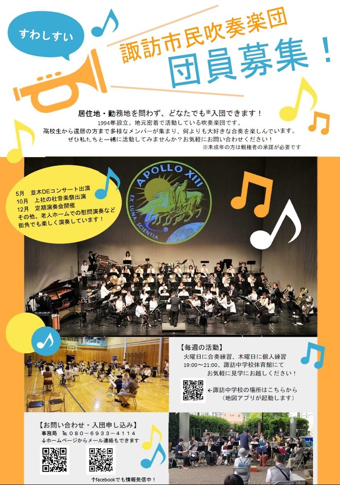

新入団員募集のお知らせ

諏訪市民吹奏楽団では、すべてのパートで新入団員を随時募集しています。
初心者からブランクのある方まで、大歓迎！まずは見学からお気軽にどうぞ。
- 入団資格
- 音楽を楽しみたい方ならどなたでもOK。全国どこからでも参加可能。18才未満は保護者の同意が必要です。
-
【参考：パート人数】※2026.4現在 大募集パートは★
フルート5／オーボエ1／クラリネット6（バスクラ1）／サックス8（アルト5・テナー2・バリトン1）／ トランペット5／トロンボーン4 ★／ホルン3 ★／ユーフォニアム3 ★／チューバ1 ★／パーカッション3 ★ - 活動内容（例：2024年度）
- 並木DEコンサート、サマーコンサート、すてぱフェス、上社の杜音楽祭、定期演奏会など
- 練習日
- 火曜 19:00〜21:00（合奏）、木曜 19:00〜21:00（個人・パート練）
- 演奏会前は月1回程度の日曜練習あり
- 練習会場
- 諏訪市立諏訪中学校 小体育館
- 住所：長野県諏訪市清水3丁目3619-3
-
- 団費
- 一般：2,000円/月、学生：1,000円/月